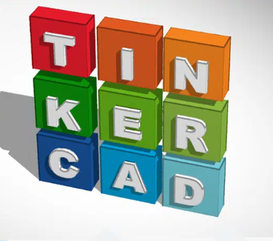

Simulator Tinkercard
O que é?
O Tinkercad é uma ferramenta online de design de modelos 3D em CAD e
também de simulação de circuitos elétricos analógicos e digitais, desenvolvida pela Autodesk.

Fonte: Markhero
Fonte: Markhero